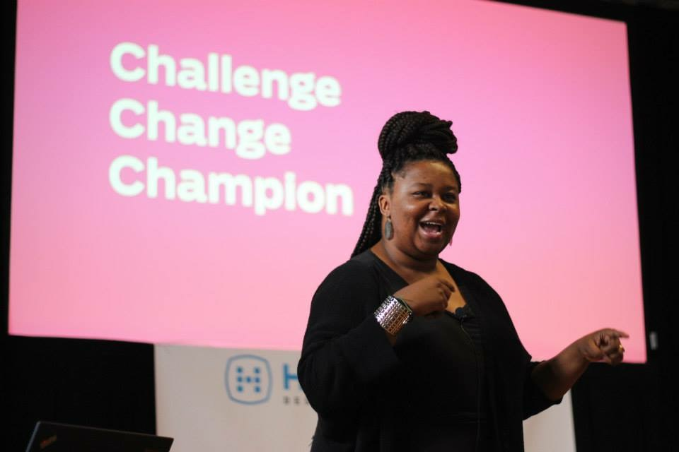
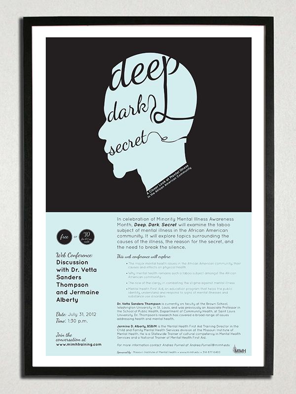
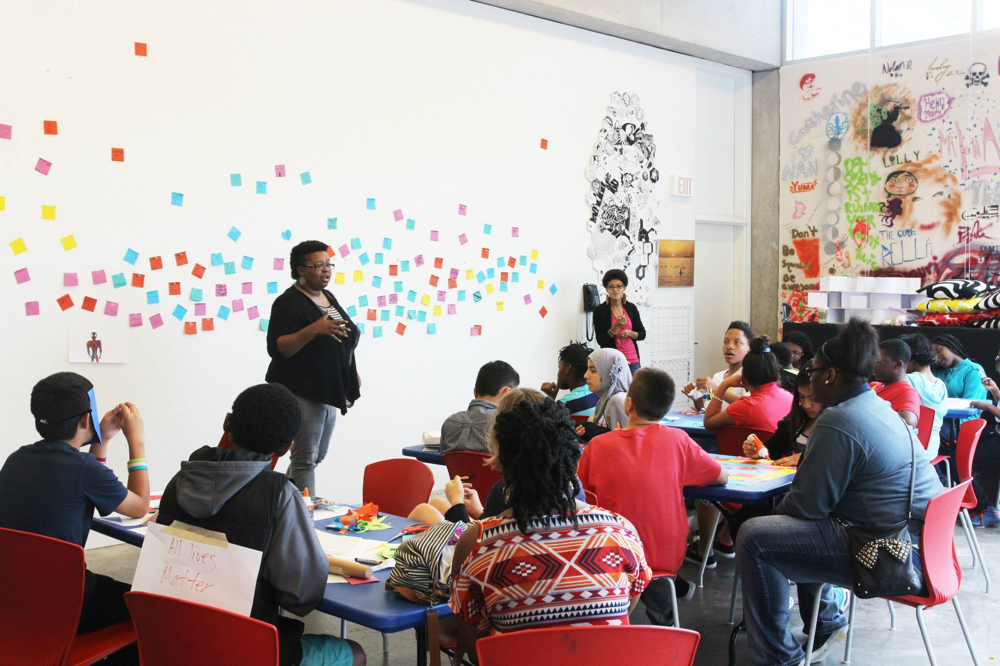
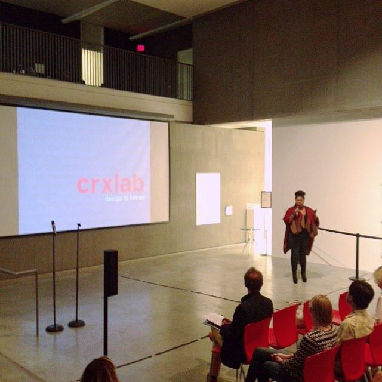
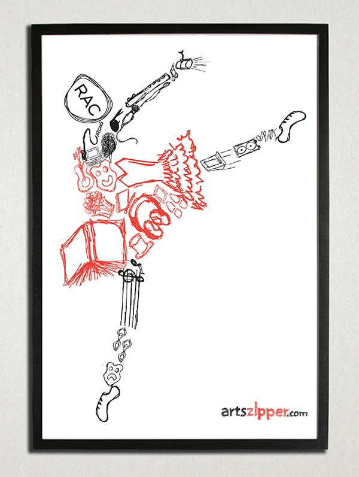

Bio
Antionette D. Carroll is the Founder and CEO of Creative Reaction Lab, a social enterprise that empowers and challenges community members to design inclusive cities by developing solutions addressing personal and structural racism. Throughout her career, Antionette has worked for non-profits working for social justice, human rights, and diversity and inclusion. These experiences led to her background as a social entrepreneur, non-profit leader, and design activist. Antionette's personal mission in life is to CHALLENGE standards, make CHANGE, and CHAMPION approaches resulting in foundational and community impact.
Also, Antionette is an active community volunteer. Antionette was named the Founding Chair of the Diversity and Inclusion Task Force of AIGA: The Professional Association of Design in 2014. Currently, she’s the Chair Emerita of the Task Force working on long-term strategic initiatives such as the Design Census Program with Google and national Inclusivity in Design Summit. With her encouragement, AIGA created the first Racial Justice by Design program, with Antionette co-organizing and assuming the role of online producer for the national Town Hall in 2016. At the local level, she is currently serving as the President of AIGA St. Louis and co-founder of the Design + Diversity Conference. Antionette also sits on several awards and programming committees for local and national non-profits, including the steering committee for The City of St. Louis’ Resiliency Office, supported by Rockefeller Foundation, and formerly the founding anti-bias/anti-racism committee for City Garden Montessori School.
Growing Up Black
I was born and raised in a variety of lower-income, primarily African American, communities of St. Louis, Missouri. And, although, we didn't have much to spare, the arts were heavily supported in my home. In my childhood, we would regularly have art and craft days in my living room. And although we didn't know there were viable careers within the arts, my grandparents always instilled a sense of creativity in the younger generation. For me, my love for the arts were supported by the consistent gifts of DIY sets and traditional visual arts materials. I was the child that will take a literature project and turn it into a fully designed game board. Or, I would take a history lesson on World War II and translate it into a youth storybook. Creativity and the arts were always embedded in my life and, therefore, I find it natural that I will become a designer.
How did you first get interested in design?
Unfortunately, I didn't learn about design until my sophomore year in college. It was at that time that I decided to transition from studying biology and biotechnology to tapping into my creative side. For me, it was trial and error. I knew I wanted to potentially work in the marketing and advertising fields. However, I wasn't sure which path to take. Therefore, I studied design as well as integrated marketing to become well-rounded. I thought this approach was important to be able to provide a holistic skillset to adequately address many of the marketing challenges for my future clients. Ultimately, I didn't finish with a BFA degree, but I made sure that I had enough coursework to help me continue on my journey of becoming a social impact and nonprofit communications expert.
Tell me about the work you've done?
As a Midwest visual communicator and designer, I've worked in-house (corporate and nonprofit), within an advertising agency, as well as freelanced. Primarily, I've worked within the nonprofit and social innovation sector, particularly for diversity and inclusion organizations. While working in-house for corporations and agencies provided a plethora of opportunities, I quickly determined that my passion lied within the social justice field. My latest position, prior to my current role as Founder and CEO of Creative Reaction Lab, was as Head of Communications at a nonprofit called Diversity Awareness Partnership. Within this role, I was over brand communications, fundraising, language development, digital media management and design, and more. As the lead designer and marketer, I worked on designs as small as program logos and print advertisements to large initiatives, including a full organizational rebrand and the development of an iconography system depicting the variety of identities within the diversity and inclusion field (e.g. religion, sexual orientation, racial identity, etc.). After leaving this role and becoming a full-time design entrepreneur, strategist, facilitator, and activist, I've mainly been using design as a catalyst for community organizing and creative problem solving. However, I still practice traditional design through personal art and design projects including designing a button for the Hillary Clinton for President campaign (The 45 Pin Project), a nationally touring Get-Out-The-Vote poster for AIGA: The Professional Association of Design, and The Dear Oppressor Project.
What are you working on right now, either for work or yourself?
Through Creative Reaction Lab, I am designing new program and organizational models to rally community members to develop solutions addressing racial inequities hindering the social, cultural, and economic growth of their communities. Particularly, we’re working with Black and Latinx youth to design inclusive cities through four pillars of learning: entrepreneurship, creative problem solving, cultural history and healing, and civic leadership. Interesting enough, although I’m no longer “designing” as a graphic designer, I’m now “designing” as a social entrepreneur and civic leader.
Personally, I’m developing a new podcast program that is analyzing and highlighting design programs, initiatives, and campaigns addressing diversity and inclusion disparities within the design industry. (Stay tuned!) Also, I’m further developing The Dear Oppressor Project by building an online campaign around our 2015-2016 efforts, developing tools for the community workshop series, and planning pop-up participatory exhibits. Lastly, I’m authoring a book (or two)!
What are your proudest accomplishments of your career?
Design as Entrepreneurship. By far, my greatest accomplishment as an entrepreneur, designer, and community organizer has been the development of Creative Reaction Lab. As a former resident of Ferguson, Michael Brown, Jr’s death amplified my frustrations regarding systemic racism and the lack of community voice when responding to civic issues. At the time, I was head of communications at Diversity Awareness Partnership, and we, too, continued to perpetuate the “top-down” mentality. With the consequences of oppression and the lack of community input rearing its head through riots and city division, I saw the need for a space of inclusion and action. Within two weeks, Creative Reaction Lab, the event, was launched.
Since founding Creative Reaction Lab in 2014:
St. Louis citizens have developed and launched five projects addressing racial inequality and police brutality (ranging from public art campaigns to a mobile civic action tool).
Over 3000 individuals have been challenged and trained in creative problem solving for civic engagement, including over 350 citizens in Grand Rapids developing solutions in response to gentrification and oppression in Michigan and 15 designers and local activists developing creative responses to the HB2 Law in North Carolina.
We’ve collaborated with over 20 institutions, including the City of St. Louis’ new Resiliency Office and Washington University’s Gun Violence Initiative.
The Design to Better [Our City] program was named a 2017 Knight Cities Challenge Finalist.
Additionally, since the founding of the organization, I've had amazing opportunities to travel around the nation teaching others how to become creative civic changemakers in their communities. Being named an American Express/Ashoka Emerging Innovator and Next City Vanguard didn't hurt either.
Design as Community Organizing. Another major accomplishment was being named the Founding Chair of AIGA’s Diversity and Inclusion (D&I) Task Force. While this appointment was an honor, the previous year was filled with frustration, confusion, and hope. In fall 2013, I approached the AIGA staff about the lack of diversity in the design profession and the “want” of creating an initiative to address this. Naively expecting a resounding “yes”, after providing many reasons, there was extensive hesitation. This experience taught me the necessity of building a business case parallel to a social movement. Immediately, I started defining the ROI of diversity for the industry while rallying creatives nationwide, including chapter diversity chairs and lapsed non-members citing the lack of inclusion as their reasoning for leaving. After almost a year of presenting the “need” for this initiative, AIGA agreed to create this initiative. Since then, we have created the first D&I Residency, cofounded the Racial Justice by Design Collaborative, co-launched the AIGA and Google Design Census (my third greatest accomplishment), and more.
What are you doing that's special that sets you apart from your peers?
While there are several organizations using a variety of design thinking methodologies to develop solutions addressing social issues (primarily economic inequalities), I have modified our creative problem solving approach to include diversity and inclusion concepts (such as cultural humility versus cultural competence) and power-sharing dynamics through holistic co-creation. Additionally, my company Creative Reaction Lab, is one of the only organizations using this approach challenging Black and Latinx youth to co-create solutions addressing systemic racial inequities hindering the growth of both communities (e.g. mass incarceration and the education opportunity gap).
What are your biggest motivators?
Addressing social injustice issues that lead to exclusion and the lack of human rights. I want to help people have better lives while we create a more just and inclusive world. There’s nothing more important to me (except my family).
How do your friends and family feel about the work you've done?
My family and friends are extremely supportive of the work that I do, but moreso as an entrepreneur opposed to a designer. Honestly, I’m pretty sure that my family has no idea what I mean by “design”. And, the lack of understanding, is the same within the local communities Creative Reaction Lab serves. Therefore, I have modified language using terms such as “entrepreneurial thinking”, “solution development”, and “creative problem solving” opposed to design. I’ve learn the importance of meeting people where they are instead of trying to force them to come to you. As communicators, it’s our jobs to do this for clients, so why not do this for ourselves?
What do you love most about working in design?
The nature of design is navigating complexity and ambiguity. Designers are the invisible disruptors in today’s society, were the makers of our revolutions throughout history, and will transcend us into the future (whether positively or negatively). Designers have more power than we think, as we have a tendency to minimize our contributions (or allow others to minimize it for us). And, this is due to the fact that it’s sometimes hard to quantify the value of an invention, shifting human behaviors, or changing hearts and minds. With all of this power, I feel that it’s my duty to use design for the betterment of society and to work with communities for civic and social improvements.
What would you like to see changed about the design field?
Designers(!): We need to become more forward thinking. We’re so focused on designing for others than we forget to dialogue and strategize how we’re going to design the future of design. Tech is doing this with VR, AI, etc. What about design? Additionally, as solution developers sitting at many different tables, cubicles, schools, and communities, we need to have more designers within these opportunities that will provide a variety of perspectives (including lifestyles, racially, economically, different ability statuses, considering the binary and nonbinary gender spectrum, etc.). It’s time to intentionally diversify our industry! And, not only through pipeline development (but, don’t stop speaking to those elementary school classes!), but also through retainment of talent already within the field.
How can design be more accommodating to underrepresented populations of people?
Recognize that designers are already within these communities. They are designing for the mom and pop shops, entertainment clubs, religious gathering centers, restaurants, etc. Also, we need to stop defining “traditional, Eurocentric design” as “Good design”. Historically, design (amongst many other things) have been dictated by the majority and people in power. Once we recognize and accept the impact of historical and systemic oppression on the design industry, we’ll be able to have constructive dialogue about who truly defines “good design”.
Where do you see yourself in 5 or 10 years? Do you think you'll stay in design?
Not even a question. I’ll always be a designer. But, I refer to people like John Maeda. He’ll always be a designer, just in a variety of contexts. That’s me. While my time in Adobe Creative Cloud will continue to decrease over time, my “design mind” will always be relevant. Five years ago, I was designing brochures. Today, I’m designing a social enterprise. There’s absolutely no difference to me.
What advice would you give to folks from a similar background who are in design or hoping to get into it?
Research others that are doing the work that you're doing (or aspiring to do). While a path may not be laid out in front of you, I guarantee that there's a variety of people doing work that interest you. If not, start it yourself! Create the pipeline for others. And, share your journey. The beauty of today's technology is that everyone can be a content creator and strategist. Use that to your advantage.
Lastly, here's my top tips for aspiring social impact designers/civic organizers:
You have your craft, now determine your mission. My mission is addressing racial inequities. For you, it may be climate change or it may be the lack of playgrounds in your neighborhood. Determine your mission and work towards it.
Avoid fishbowl perspective. Immerse yourself. Doing social good work is messy and hard. However, we can’t do this work through the lens of stereotyping or assumptions. Move beyond competency and work towards humility (cultural, gender, religious, etc.). It’s easy to sit at our computers and develop solutions based on our own perspectives and vantage points. But, that doesn’t mean it’s correct or effective. You MUST talk and connect with others. Immerse yourself in the community, situation, event, etc. Your solution will be 200% more impactful.
Try. Fail. Learn. Repeat. Mistakes are normal and failure is inevitable. Opposed to being stuck in your head or avoiding failure, embrace it. I consider every project I’ve ever worked on as a failure -- no matter the reach or how many awards it has received. Don’t consider “failure” as the ultimate doomsday curse. Failure is on a spectrum and the lessons learned through failures are eternal. Stop striving for success, but instead lessons for improvement.
Collaborate. Collaborate. Collaborate. Need I say more?
Integrate diversity. Groupthink is the ultimate no-no, yet we continue to create homogenous groups. Intentionally developing diverse groups brings a variety of skillsets, ethnicities, economic statuses, etc. to the table. This will help you accomplish more while considering others’ perspectives. And, remember, dissent is encouraged.
Create for engagement. This is a personal bias, but I always strive for audience participation. Think of it as the equivalent of a “Call to Action” in the marketing and advertising industry. When people learn through action, they’re more likely to retain the lesson or skillset opposed to learning through the traditional methods of lecturing and reading. Additionally, crowdsourcing community responses make the project or initiative more inclusive and impactful. Social media platforms and talking through hashtags are this concept on steroids.
Recognize your power. Then, share it. A majority of people in society has some form of power. (Note that I did not say ALL.) If you’re fortunate enough to have power, whether through an extensive network, professional position, disposable income, free time, etc., use your powers for good and extend to those less fortunate. One of my goals in life is to create spaces within urban hubs that encourages collaboration and co-creation between a Burger King worker, police officer, and Fortune 500 business executive. Ambitious? Yes. But, for this to happen, power must be shared. Let’s work together to make these collaborations expectation opposed to happenstance.